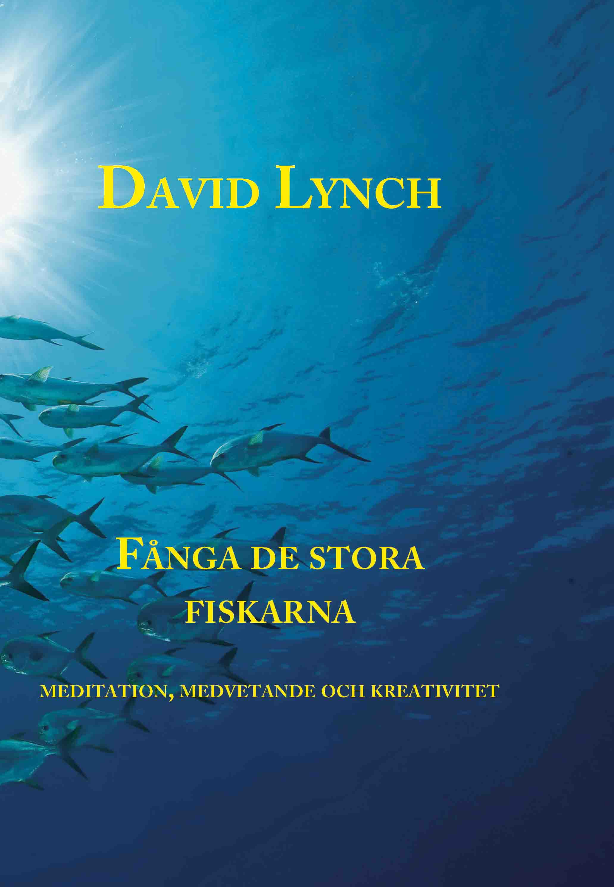

Fånga de stora fiskarna,
meditation, medvetande och kreativitet
Av David Lynch

Med TV-succén Twin Peaks och filmer såsom Eraserhead, The Elephant Man, Wild at Heart, Blue Velvet, Mulholland
Drive och INLAND EMPIRE har David Lynch gjort sig känd som en av de mest originella och kreativa filmskapare
som världen har skådat.
I den här boken berättar han om bakgrunden till sina filmer och avslöjar hemligheten bakom sin märkvärdiga förmåga till nyskapande. Han menar att liksom de riktigt stora fiskarna finns i oceanernas djup så finns de riktigt omvälvande idéerna i djupet av vårt medvetande. För att fånga dem måste man dyka inåt.
I korta kärnfulla kapitel beskriver han sina arbetsmetoder, sin kreativa process och hur transcendental meditation har hjälpt honom i denna.
Boken är en guldskatt för alla som är intresserade av film och/eller vill bli mer kreativa.


I den här boken berättar han om bakgrunden till sina filmer och avslöjar hemligheten bakom sin märkvärdiga förmåga till nyskapande. Han menar att liksom de riktigt stora fiskarna finns i oceanernas djup så finns de riktigt omvälvande idéerna i djupet av vårt medvetande. För att fånga dem måste man dyka inåt.
I korta kärnfulla kapitel beskriver han sina arbetsmetoder, sin kreativa process och hur transcendental meditation har hjälpt honom i denna.
Boken är en guldskatt för alla som är intresserade av film och/eller vill bli mer kreativa.